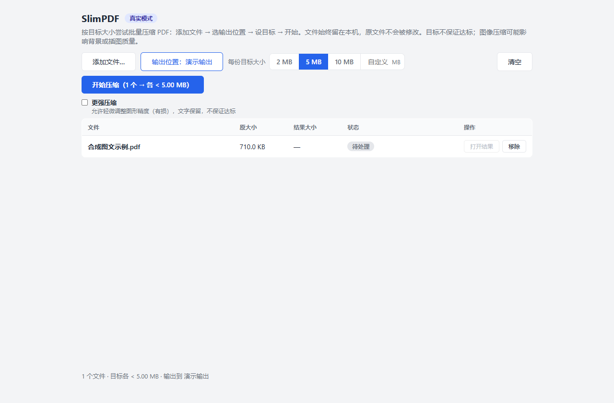
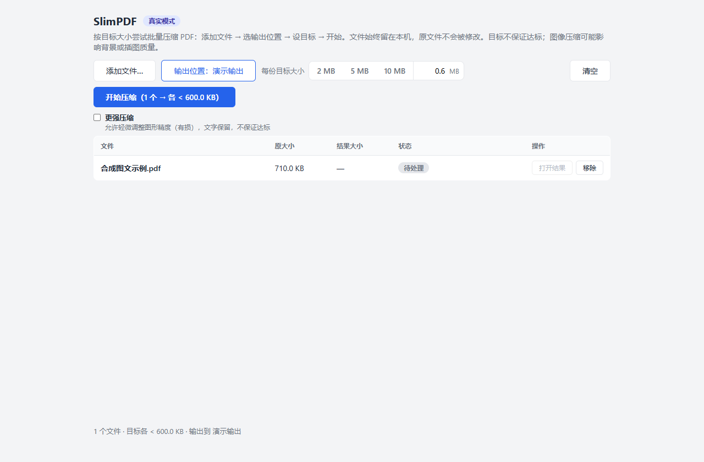
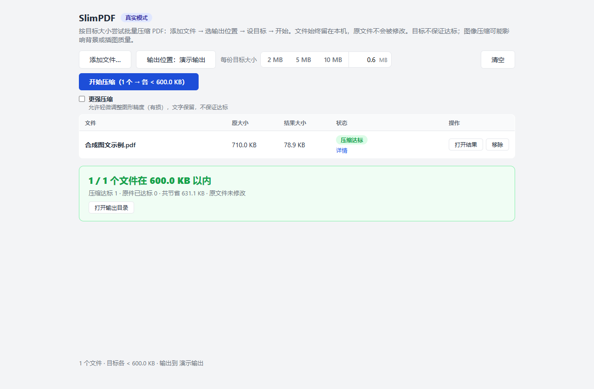

试着缩小 PDF，文件留在本机处理。
SlimPDF 是一个 Windows 本地运行的 PDF 目标大小压缩工具：你指定每份文件的目标大小，它在本机处理并把结果另存为副本，原文件保留，也无需安装 Python。
测试版通过 GitHub 下载；国内普通网络的可达性仍待实测。
适合谁
- 希望缩小 PDF 体积、同时希望文件留在本机处理、不经过网页上传的人。
- 经常遇到邮件或系统附件大小限制，愿意尝试把 PDF 压到指定大小的人。
目标大小是“尝试达到”的目标，不保证每份 PDF 都能压到；提交前请自己检查输出文件。
当前限制（请先读这部分）
- 目前是免费测试版 beta-20261013，仅在独立 Windows 11 x64 沙盒中验证过有限合成样本、许可启动流程和中文路径；Windows 10 及其他系统尚未独立验收。
- 压缩率因文档类型而异；背景与插图处理可能有损。“更强压缩”选项默认关闭。
- 受保护或无法处理的 PDF 会被跳过或报错；未达到目标大小时会如实显示，不会假装成功。
- 请务必保留原文件，并在使用前检查输出结果。
- 当前流程通过软件内的“添加文件”按钮选择 PDF，不支持从浏览器拖入文件，也没有网页上传服务。
三步上手
-
① 添加 PDF 并选输出位置
完整解压后双击“启动.bat”，阅读并自行决定是否接受许可，然后在软件内点“添加文件”选择 PDF，并选定输出目录。

合成图文示例：已添加 PDF，并选择输出目录。 -
② 设目标并开始
为每份文件设置目标大小，点击开始。软件会尝试达到目标大小，但不保证每份文件都能达标。

设置每份目标 0.6 MB，保持更强压缩关闭，然后点击开始。 -
③ 检查输出大小与结果
查看输出大小与状态，打开结果文件检查内容是否符合预期。结束使用可运行“停止.bat”。

该合成样本实际结果：710.0 KB → 78.9 KB，目标 600.0 KB，压缩达标。
以上是公开测试包处理一个两页合成图文 PDF 的真实截图。图像处理可能有损；此结果不代表其他 PDF 的压缩率或达标保证。
反馈方式
试用后请到 GitHub Issues 反馈页 提交结果。反馈需要一个 GitHub 账号，且内容是公开的。
建议提供：测试版本号、Windows 版本、操作步骤、实际结果与预期结果、脱敏后的错误信息、可选的文件大小信息。
为保护隐私，默认不要上传 PDF 原件、含私人信息的截图、完整文件路径或完整日志。下载量和 star 数不作为有效反馈。